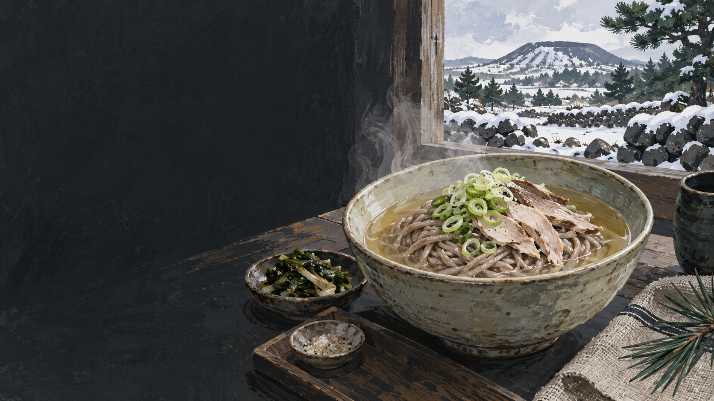

꿩
겨울 산야의 식재료이자 귀한 단백질원이었습니다.
 제주에서는 이 재료를
제주에서는 이 재료를
제주 음식의 생활문화를 바탕으로 제작한 기록화 · 생성 이미지
제주의 메밀은 척박한 밭에서도 비교적 짧은 기간에 자라 쌀과 밀이 귀한 식생활을 보완했습니다. 꿩은 산과 들에서 얻는 단백질원이었고, 뼈와 살을 오래 끓인 국물에 메밀면을 말면 따뜻한 겨울 음식이 됩니다.
꿩 국물은 닭보다 향이 또렷하고 지방이 많지 않아 담백합니다. 메밀면은 국물을 흡수하면서도 거친 곡물 향을 남겨 두 재료의 성격을 함께 보여 줍니다.
결과만 보지 않고 손질과 도구, 시간과 사람의 일을 함께 봅니다.
고기와 뼈를 깨끗이 준비합니다.
뼈와 살을 천천히 끓여 맑게 거릅니다.
메밀가루에 물을 더해 면을 만듭니다.
끊어지지 않도록 짧게 삶습니다.
육수에 면과 찢은 꿩고기를 담습니다.
이름과 환경, 공동체의 쓰임을 나누어 읽습니다.
겨울 산야의 식재료이자 귀한 단백질원이었습니다.
짧은 생육과 제주 밭농사에 맞아 국수·빙떡·국에 쓰였습니다.
뜨거운 국물과 저장 곡물이 농한기의 한 끼를 이었습니다.
유명한 메뉴보다 왜 이런 재료와 방식이 제주 생활에 필요했는지를 먼저 묻습니다.
이름 하나로 단정하지 않고 재료·공정·쓰임을 함께 비교합니다.
꿩 뼈·고기의 맑은 육수
멸치·고기·동치미 등 다양
제주 메밀의 투박한 향
지역별 메밀 함량·제면법 다양
찢은 꿩고기
소고기·김·무 등
담백하지만 야생육 향
차갑거나 간장 풍미가 익숙함
사냥 환경과 사육·유통, 긴 손질 시간의 변화로 꿩 음식은 일상에서 멀어졌습니다. 식당의 재현만으로 과거의 보편성을 추정해서는 안 됩니다.
조리자의 육수법과 메밀 함량, 꿩의 조달 방식을 함께 기록해야 복원의 근거가 남습니다.
꿩과 메밀의 만남은 유행의 조합이 아니라 제주 겨울의 재료 사정에서 나왔습니다.
꿩의 포획·유통에는 법규가 적용됩니다. 합법적으로 사육·유통된 식재료인지 확인하고, 야생 채집을 조리법처럼 권하지 않습니다.
지역·가정·생산자에 따라 설명과 조리법이 다를 수 있습니다. 현장 인터뷰를 인용할 때는 당사자의 사용 동의를 받습니다.